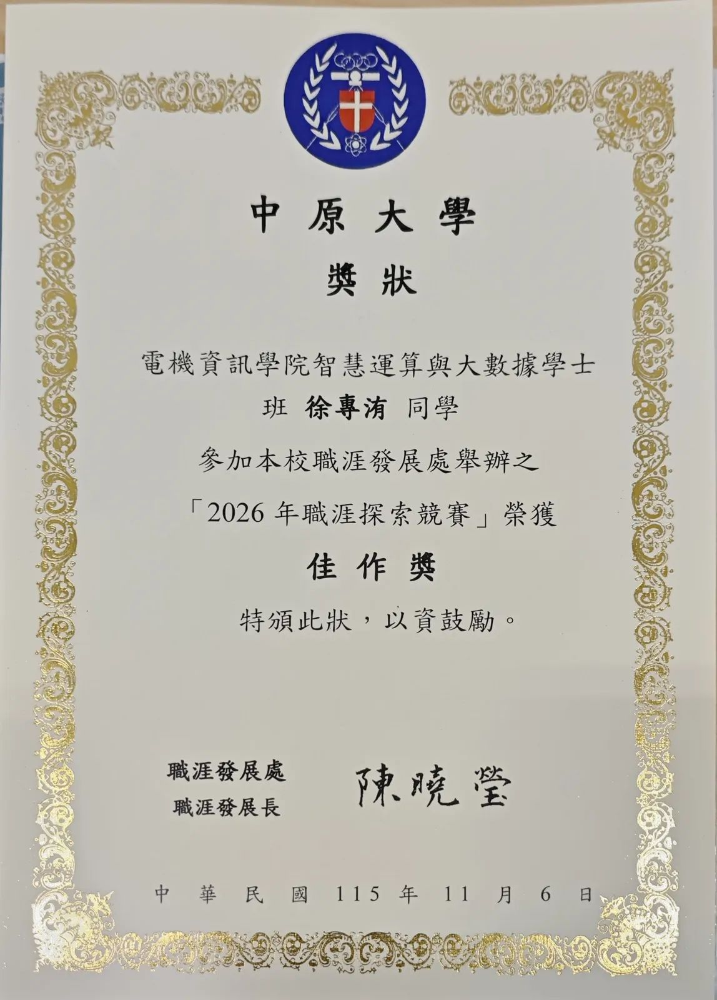
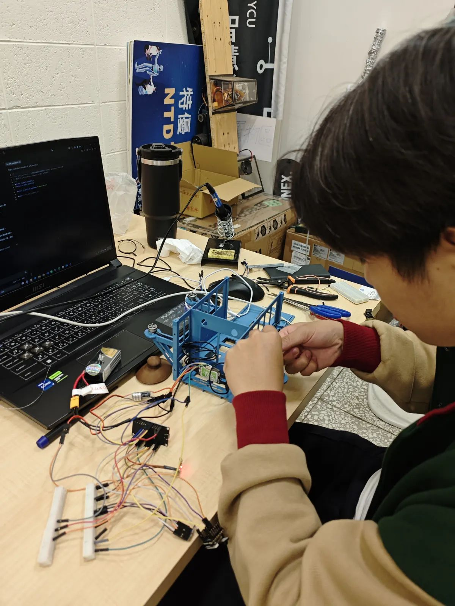
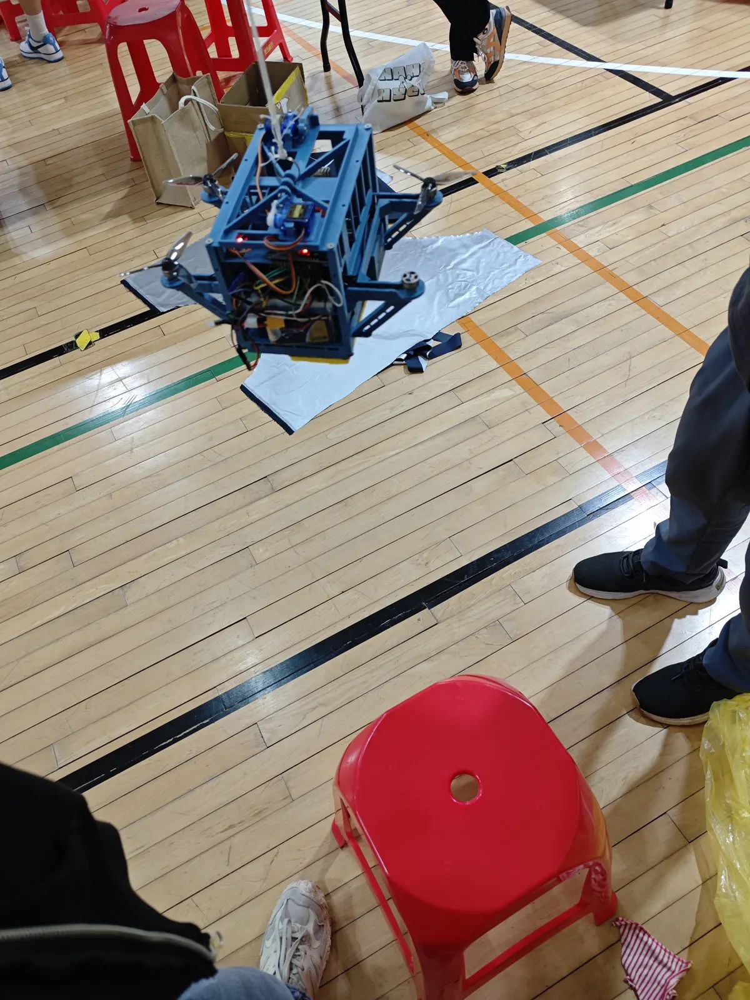
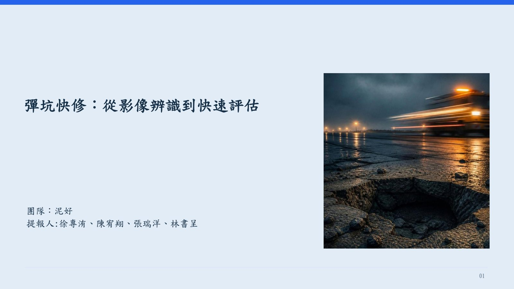
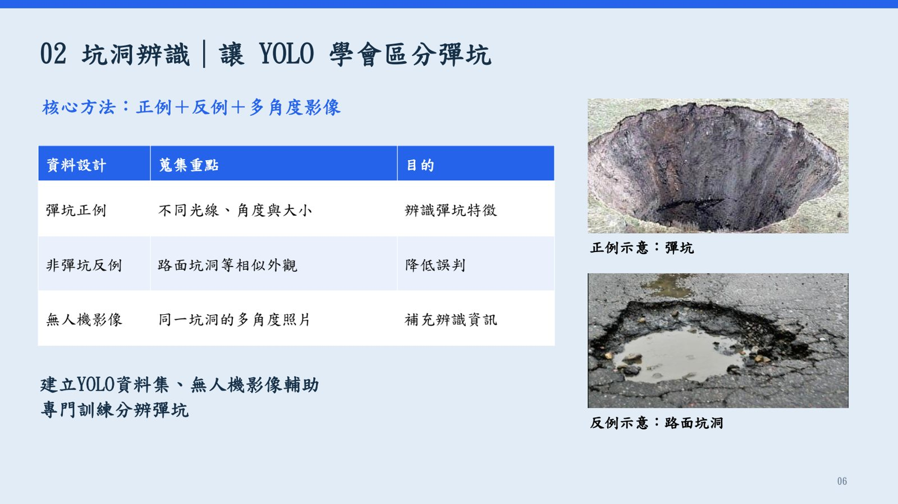
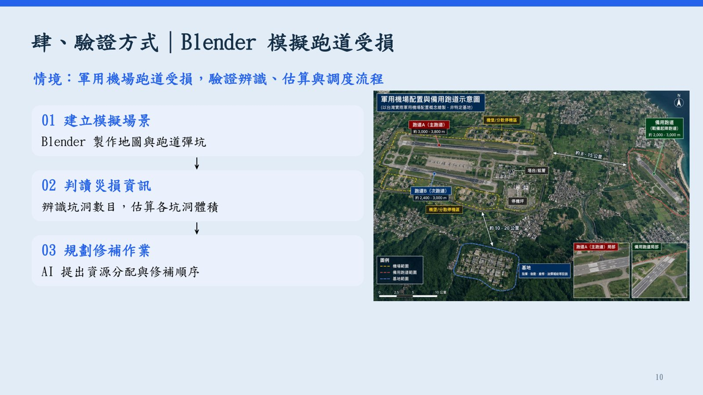
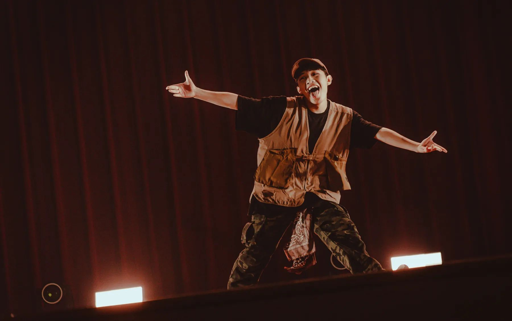
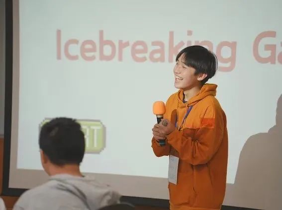
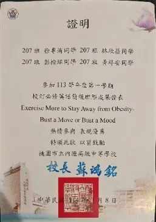

做東西
背單字老是忘，就自己寫了 WordMemo。學校的比賽和獎學金公告散在各處，又做了中原機會雷達。硬體也碰：ESP32 小車、3D 列印。

PROGRAM節目單
HSU JUAN WEI · 中原大學 智慧運算與大數據學士班
今晚的節目 滑過去看看，點了看細節
習慣從自己卡住的問題出發，把想法做成看得見的東西
CUE 00 / 00移動追光燈，照到台上的經歷就點它
背單字老是忘，就自己寫了 WordMemo。學校的比賽和獎學金公告散在各處，又做了中原機會雷達。硬體也碰：ESP32 小車、3D 列印。
高中熱舞社的活動兼教學幹部。教舞、辦成果發表會，原定場地不能用的時候，是我去找新場地，演出才辦得成。
主持過丹麥訪問團的交流活動，全程英文。現在是班代和 NUVA 校園大使。
剪過畢業典禮、社團博覽會的影片，自己也在做短影音。
新的在上面，點一下就能展開。完成進行中沒成功
錄取電資學士班的海外參訪，11 月 23 到 27 日在胡志明市。
申請時寫了交流動機、我做過的影像辨識專案和剪片經驗。錄取之後補完行前資料，也跟學校請好公假和考試假。
申請書裡答應過回國後要交影音成果，到時候會放在 YouTube 作品集。

中原大學職涯發展處主辦。

東海大學和科博館主辦。從零做出一台能降落的機體，最後完賽。
機體是 3D 列印的藍色框架。飛控是我們用 ESP32 自己寫的四軸飛控，再加一顆 ESP32 相機辨識地上的 AprilTag，讓機體自己找降落點。
降落要怎麼設計，是在機器人社課後和隊友一起討論出來的。比賽當天在體育館，最後完賽，沒有得獎。




想知道量子演算法 RQAOA 能不能在排程問題上贏過一般電腦。跑了 116 個題目，還沒贏。
我想知道量子演算法 RQAOA 在真實的排程問題上，到底能不能贏過一般電腦的方法。試了汽車噴漆換色、MAX-k-CUT、三色問題、Wi-Fi 頻道規劃，總共 116 個題目。
噴漆換色上，RQAOA 比一個專用的傳統方法好大約 12–14%；換成更強的禁忌搜尋，它就輸了。輸的原因我也整理成失敗分析。
另外做了「量子適用性健檢」，讓量子和古典方法在企業的小樣本資料上正面比較。兩個研究都公開在 GitHub。

隊伍「蠑螈」，我負責機械構想和製作。
這是裝在物流無人車上的配重補償模組。工廠常把貨物疊得很高，無人車轉彎、煞車或被撞時容易翻倒，現場多半只能放慢速度。
我們在載台四個角裝荷重元量受力，算出往哪個方向快要倒，再用 X、Y 兩軸的皮帶帶動一塊配重去補償。每一軸 4 顆 775 馬達左右同步驅動，配重用 PID 加 S curve 控制，移動時不會晃到車體。
8 頁技術說明書裡的初步模擬：加裝後靜態傾倒臨界力提升約 11–12%。接下來要做配重、同步反應和載貨的實測。


每天自動抓學校 16 個公開來源的公告，整理成可以搜尋的網站。
競賽、實習、獎學金、出國、講座都收。有截止時間表、收藏和重要提醒，也能跟 AI 說自己的興趣，讓它從公告裡挑。
技術上用 TypeScript、React、Cloudflare D1、Google 登入，可以裝成手機 App（PWA）收推播。10 月底整個搬到 Cloudflare，五千多筆資料一起搬過去。

第一個任務做了 LINE 公事小精靈，用 n8n 把 LINE 和 AI 接起來。
公關部部員，正在擔任校外交流活動的副協。
校外交流是好幾所學校一起辦的活動。我參與企劃書和場地座位安排，也整理了 48 家特約商店的優惠標籤。

我負責機構，用 Fusion 360 改了好幾版，最後自己設計棘輪和齒輪。
每一版都換過配置和零件尺寸，也用 ESP32-C3 做了手機控制。買來的絞盤不會自己停，我就自己設計棘輪和齒輪換掉它：捲筒旁邊加一片棘輪，棘爪卡住就能停在定點。現在的 Mk4 機構已經完成。



「彈坑快修」，擔任隊長，和學長的團隊一起送件。
戰時機場跑道常是第一個被攻擊的目標，越快修好越能恢復起降。我們的想法分四步：無人機拍跑道、YOLO 找出彈坑（也拿路面坑洞當反例訓練，避免誤判）、用 3DGS 快速重建 3D 模型估算彈坑體積，最後由 AI 估算材料、人力並排修復順序。
驗證方式是用 Blender 模擬機場跑道受損。指導老師是陳永祥老師，10 月 13 日送件，現在等主辦通知。



隊名「泥好」，永續淨零與綠色創新組。
指導老師是陳永祥老師，題目是道路修復分析。送件當天才發現已經有類似的平台，細節寫在下面「沒成功的事」。

可以無線遙控，也會自己閃開障礙物。
從選零件、接電路、調馬達方向、安排車架空間到配電源，全部自己來。遙控用 ESP-NOW，前面的超音波感測器讓它自己避開障礙物。
做的過程出過不少錯：馬達正負極接反，車子一邊前進、一邊後退；也低估了走線空間，只好重新調整開關座和車架。

卡片收納盒、文具收納盒。
用自己的印表機印卡片收納盒和文具收納盒。不是按下列印就好：要會構圖、控制室內溫度避免翹曲，印出來尺寸有誤差就量了再重印。


單字網站是 WordMemo 的第一版。
單字網站結合記憶法、間隔重複和 AI 造句批改，是為了解決我自己準備英文時的痛點，後來重寫成 WordMemo。
復盤工具吃棋譜檔，把每一步分級，下錯的地方給最佳走法。同一段時間也做過網頁點餐系統。

高二選了社會組，後來決定跨考自然科，自學物理和化學。
社會組讓我習慣從市場和需求的角度看科技，但我更想親手解決問題，所以決定跨考。物理、化學靠線上教學影片加大量題目自學追進度。
英文方面，學測前我要求自己連續 30 天每天寫一篇英文作文，最後學測英文 13 級分（頂標）。平常也讀英文文章、自己練 SAT，模擬考 1200 分。

海外翱翔組，進了面試，備取第 2。
計畫叫「矽谷引路：Google 圓夢領航員」：想去 Google 看 AGV 系統，去 UCLA 的 RoMeLa 和 URIL 實驗室看機器人和電腦視覺。
面試簡報用英文做，介紹我從社會組跨到電機、做過的單字網站和 ESP32 小車，也說好回來要把小車升級成有視覺和機械手臂的小型 AGV。最後備取第 2，沒去成。

畢業典禮、旅行、訪談短影音，作品集有 7 支。
剪過畢業典禮、社團博覽會的活動影片，也開始做自己的短影音，練選題、拍攝、剪輯和下標題。點下面的影片可以直接看。

教舞、辦成果發表會、借場地。
高二那年每週練舞六天，只有週日休息，同時還要負責教舞。
辦成果發表會時，企劃書、燈光音響、場地動線都由我統籌。原本談好的場地臨時被借給別的單位，演出差點開天窗；我到處找單位協調，最後在很短時間內借到新場地，成發照常辦完。


破冰遊戲和整場流程都由我用英文帶。
2024 年 3 月，和同學 William 一起用英文主持。開場之後帶大家玩「Treasure Hunt」：把照片切成 9 片藏在一樓，各組去找，最後還有交換碎片的協商時間。
事前要熟悉流程、介紹雙方背景，現場用英文把每個段落接起來。

代表班上參加英文簡報成果發表。
英文簡報課上，我把簡報和舞蹈表演結合在一起，老師推薦我代表班級去參加英文簡報成果發表會。
有連結的都能直接點進去用。

為什麼：競賽、實習、獎學金的公告分散在學校十幾個網站。
做了什麼：每天自動抓這些公開來源，整理成能搜尋的列表和截止時間表，可以收藏。跟 AI 講自己的興趣和經驗，它會從公告裡挑適合的推薦。架在 Cloudflare。
現在：上線中，來源和功能還在修。

為什麼：下完棋想知道是輸在哪一步。
做了什麼：上傳或貼上棋譜就能一步一步回放。每一步從「超級棒」排到「大錯誤」，下錯的地方會告訴你最佳走法，最後算出雙方的估計評分。
現在：下完棋會拿來用。
為什麼：想試試看讓東西真的動起來。
做了什麼：ESP32、馬達、超音波感測器，從麵包板一路接上車架，再用 ESP-NOW 做無線遙控。
現在：做成了。能遙控，也會自己閃開障礙物。
沒有好結果的也記下來。
青年百億海外圓夢計畫備取第 2
海外科技交流的企劃寫了很久，也進了面試，最後還是差一名。原本打算出國拍的短影音也就沒了。
後來：沒等出國，我直接開始做短影音，從選題、拍攝、剪輯到發布一路練。
創天下競賽截止當天才發現撞題
送件那天我才查到，我們想做的道路修復分析，桃園已經有在用的平台，也有營造公司做 AI 鋪面檢測。
後來：當天找組員討論要不要換題，最後用原本的題目送出。
量子競賽到現在還沒找到量子贏的地方
噴漆換色排程上，RQAOA 比一個專用的傳統方法好了大約 12–14%。換成一般電腦上更強的禁忌搜尋，它就輸了。三色問題、Wi-Fi 頻道規劃也試過，都沒有。
後來：轉去設計一個網站，幫人先檢查自己的問題適不適合用 RQAOA。最終題目還沒定。
捲線器買來的絞盤不會自己停
11 月初實測蝦皮買的絞盤，捲到定點停不下來，不符合我們要的用法。
後來：我自己設計了棘輪和齒輪，捲線器已經完成。
點開可以看大圖。
點照片可以放大。